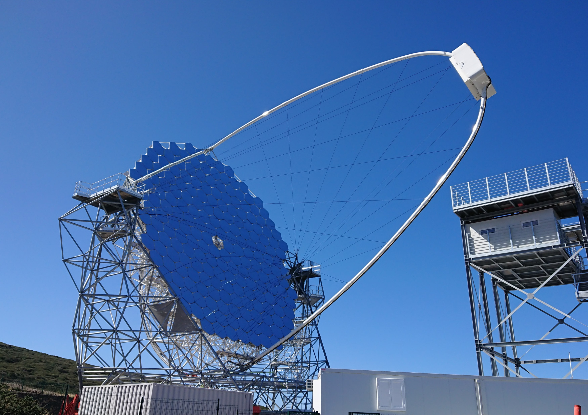
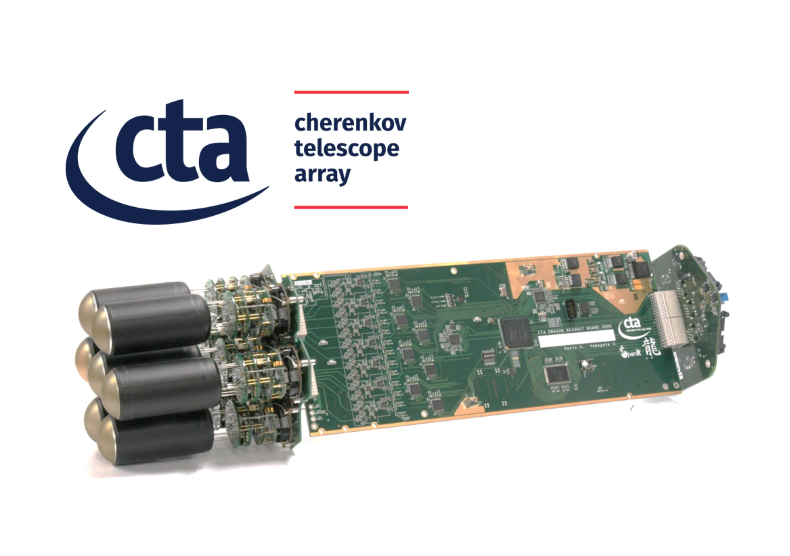

京都大学大学院理学研究科物理学第二教室
宇宙線研究室 高エネルギーガンマ線グループ

23mCTA大口形望遠鏡 1号機

焦点面カメラモジュール
高エネルギーガンマ線グループでは、現行のMAGIC望遠鏡を用いて、高エネルギー宇宙現象を観測・研究する傍ら、次世代計画CTA大口径望遠鏡の焦点面カメラの開発・観測データの解析を行っています。
京都大学大学院 理学研究科 物理学第二教室 宇宙線研究室のホームページはこちら